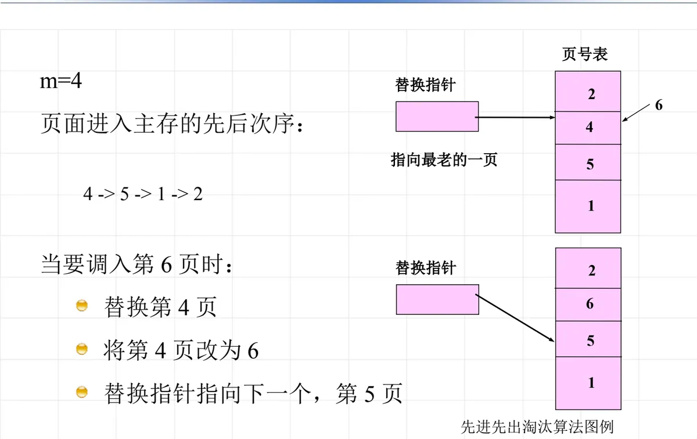
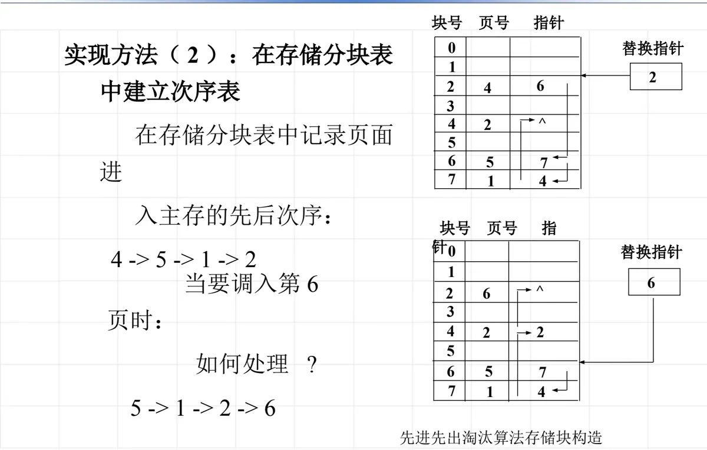
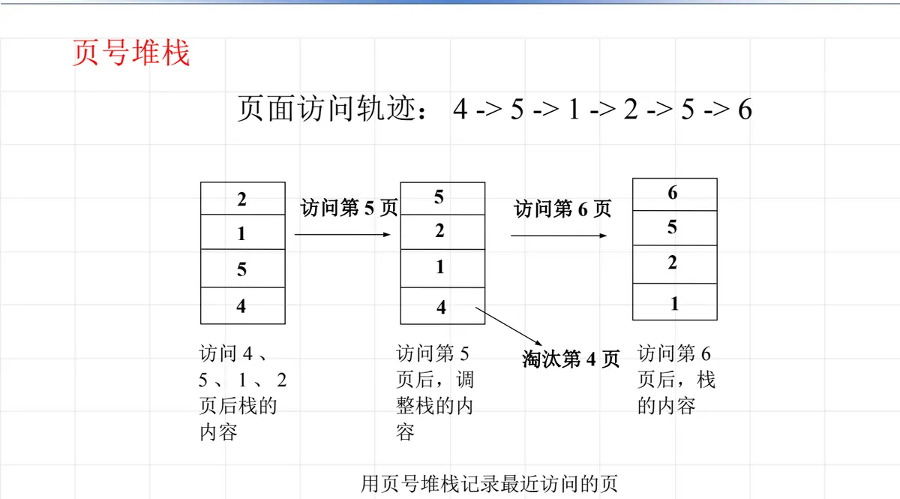
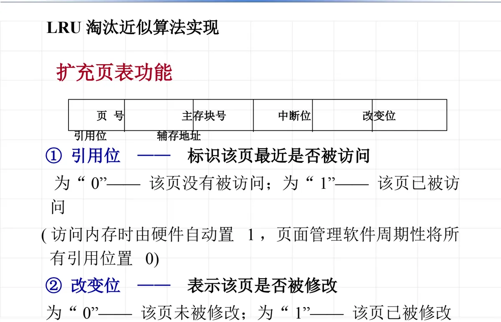
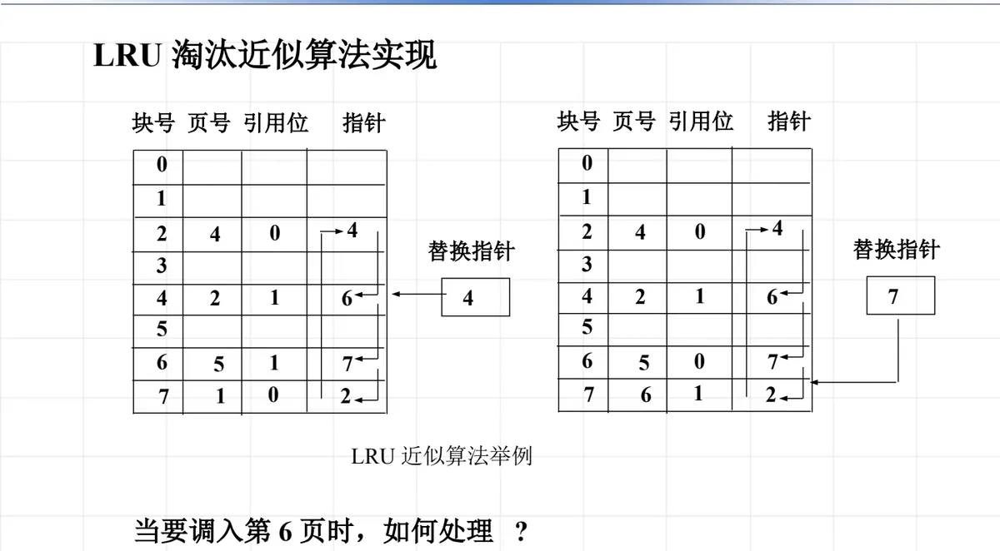
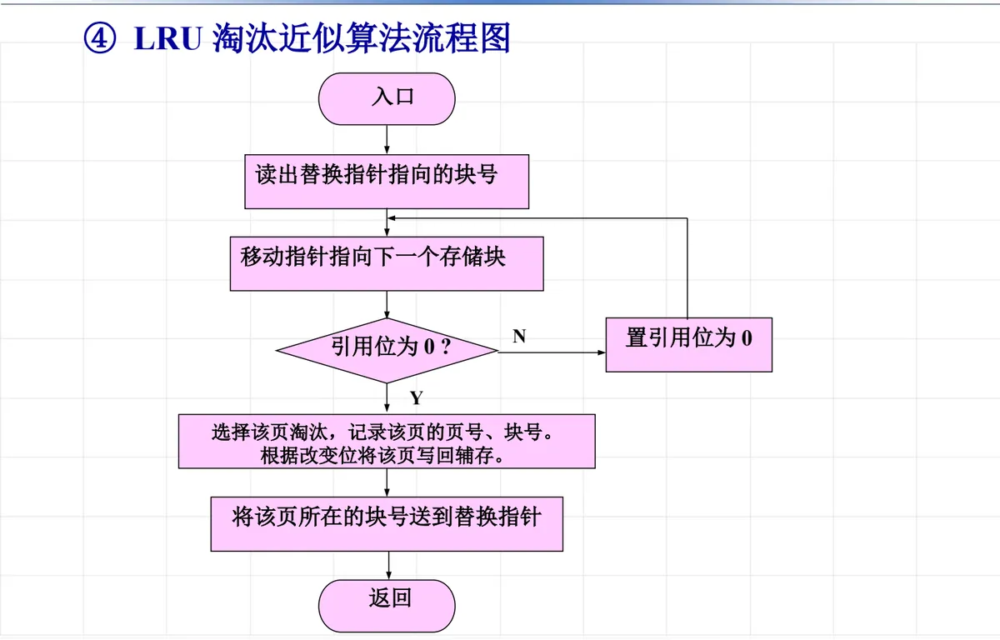
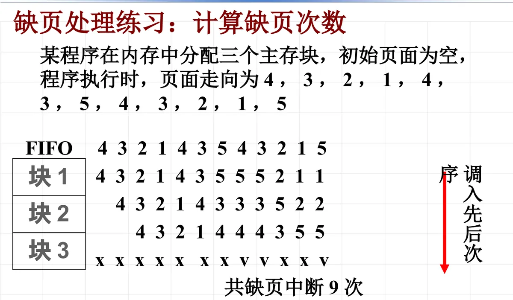
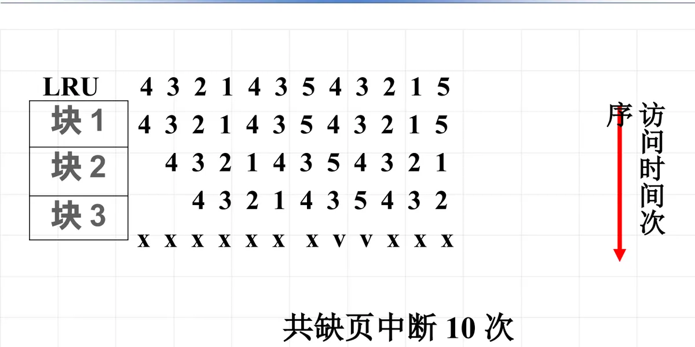
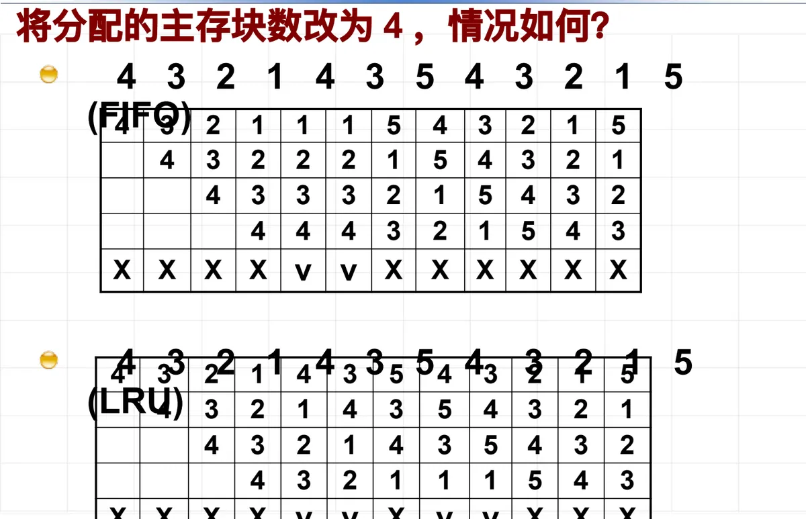

操作系统原理 · 第 7 章 主存管理
7.5 页面置换算法
主存块总是有限的：当要访问的页不在主存、而主存里又没有空闲块时，就必须先挑一页淘汰（置换）出去，再把需要的页调进来。挑哪一页，就是页面淘汰算法要回答的问题——它既决定缺页中断率的高低，也决定系统会不会被频繁换页拖垮。这一节先给出颠簸与缺页中断率的定义，再依次讲 OPT、FIFO、LRU 三种淘汰算法及其实现，最后用课件上的两道练习，把每一次置换前后主存里的变化一行一行算清楚。
1. 淘汰（置换）策略与颠簸
在请求分页系统中，一个作业的页面只有一部分装在主存里，其余还留在辅存（这是 7.4 节讲过的部分装入）。程序运行时若访问的页不在主存，硬件产生缺页中断，由操作系统把它调入。麻烦在于主存块是有限的：分配给作业的 m 个主存块一旦装满，再要调入新页，就得先选一页从主存中移出，腾出块来。这个动作叫淘汰，也叫置换；按什么规则选这一页，就是淘汰（置换）策略。
淘汰选得不好，就会引出本节第一个重要现象。如果每次换出去的页，恰好是不久之后又要访问的页，系统就会陷入「刚调出又要调入、刚调入又要调出」的循环：主存与辅存之间的频繁页面置换使系统效率急剧下降，这种现象称为颠簸（thrashing），又称「抖动」。
颠簸的原因说得非常直白：淘汰的页面恰好是不久又要访问的页面。此时处理器的大量时间都耗在等待辅存输入/输出上，真正用于计算的时间被严重挤占，所以颠簸严重影响了系统的性能。这也说明，淘汰算法不是可有可无的细节：页面选得准不准，直接决定虚拟存储系统能不能真正提高效率。
2. 缺页中断率：衡量置换算法好坏的尺子
要比较算法的优劣，先得有一个可量化的指标。假定作业 p 共计 n 页，系统分配给它的主存块只有 m 块（1 ≤ m ≤ n）。如果作业 p 在运行中成功的访问次数为 S（访问的页就在主存中），不成功的访问次数为 F（访问的页不在主存，产生一次缺页中断），则总的访问次数 A = S + F；再定义 f = F / A，f 就称为缺页中断率。它衡量的是平均每访问一次主存要发生多少次缺页：f 越小，说明分给作业的主存越「够用」，系统的效率越高。
影响缺页中断率的因素有四个：
- 分配给进程的主存页面数：分到的块越多，能同时容纳的页面越多，缺页自然越少；
- 页面本身的大小：页面越大，一次调入带进来的信息越多，但页内零头和一次调页的传送开销也随之增大，需要在两者之间折中；
- 程序的编制方法：程序的时间与空间局部性好，访问集中在一小片区域，缺页就少（局部性原理见 7.2 节）；
- 页面淘汰算法：淘汰得准，缺页就少。
这四个因素里，前两个取决于系统配置与页面划分，第三个取决于程序员，只有淘汰算法是操作系统可以主动设计的。所以接下来的重点，就是把常用的几种页面淘汰算法（置换算法）逐个讲清。
3. 最佳淘汰算法 OPT
先把标准立起来。假定程序 p 有 n 页，分配的主存块只有 m 块（1 ≤ m ≤ n）：在程序执行过程中缺页中断次数最少的那种淘汰算法，就是最佳算法，即 OPT 算法（Optimal）。它的淘汰依据是：当要调入一个新页而必须先淘汰一个旧页时，所淘汰的那一页应当是以后不再要用的，或者是在最长的时间以后才会用到的那一页。
这样选页，把将来的每一次缺页都避免到了极致，所以缺页次数最少。但 OPT 是一个理论算法，是无法实现的：在程序运行的当时，没有人能对以后要使用哪些页面做出精确判断——要判断出「最长时间以后才会用到」的那一页，必须先知道整个页面访问序列，而这恰恰是运行之前和运行之中都拿不到的信息。
它实现不了，却非常有用：最佳算法可以用来作为衡量各种具体算法优劣的判断标准。一个实际算法的缺页中断率离 OPT 有多远，就说明它还有多少改进余地；后面说 FIFO 的缺页中断率「差不多是最优算法的三倍」，正是拿 OPT 当尺子量出来的。
4. 先进先出淘汰算法 FIFO
（1）淘汰依据
FIFO 算法（First In First Out，先进先出）总是选择在主存中居留时间最长、也就是最早进入主存的那一页淘汰。它的理由是一个朴素的推断：最早调入主存的页，其不再被使用的可能性比最近调入的页要大。
要注意，FIFO 的判断依据是「页进入主存的时间」，而不是「页最近被访问的时间」。这一字之差正是 FIFO 与后面 LRU 的分水岭：一个经常被访问的页，只要它进得早，照样会被 FIFO 优先淘汰出去——而这正是它效率不高的根源。
（2）实现方法一：页号表加替换指针
第一种实现办法是专门建立一张页号表 p[m]，用来记录页面进入主存的先后次序（m 就是固定分配的主存块数），另外用一个替换指针指向最早进入主存的那一页。当需要置换一页时，选择替换指针指向的那一页淘汰；新页调入后记在刚腾出的位置上，再调整替换指针的内容，让它指向下一个「最老」的页。

课件的例子取了 m = 4。替换指针指着最老的一页（第 4 页）；当要调入第 6 页时，就替换第 4 页，把这一格的内容由 4 改为 6，然后把替换指针指向下一个，也就是第 5 页。一次置换就这样完成，指针始终指着「下一个该走的老页」。
（3）实现方法二：在存储分块表中建立次序表
第二种办法不另建页号表，而是在存储分块表中建立次序表。存储分块表本来记录的是「哪一块装着哪一页」，现在给每一项再加一个指针，用指针把各块按页面调入主存的先后次序勾成一条链；替换指针指向链首，链首就是最早进入主存的那一块。
要调入新页时，从替换指针出发沿链找到最早进入主存的那一页淘汰，把新调入的页接进次序里，再修正指针关系。这样，「谁是主存中最老的一页」这个信息就与存储分块表放在一起，不必再单独维护一张页号表。课件用「当要调入第 6 页时如何处理」把这一过程完整走了一遍。

（4）实际效果
FIFO 的优点是算法简单、容易实现。它比较适合那些按照线性顺序访问地址空间的程序——在这种访问方式下，先进入主存的页往往确实先用完、先不再用；而在其他情况下效率不高，因为那些常常被访问的页，也可能在主存中停留得最久，反而先被淘汰出去。
据估计，先进先出淘汰算法的缺页中断率差不多是最优算法的三倍。
5. 最久未使用淘汰算法 LRU
（1）淘汰依据
LRU 算法（Least Recently Used，最久未使用）总是选择最长时间未被使用的那一页淘汰。它的依据是程序的局部性原理：那些刚被使用过的页面，可能马上还要被使用；而在较长时间里未被使用的页面，可能也不会马上使用到。换句话说，LRU 用「最近有没有用过」去预测「将来还要不要用」，判断依据比 FIFO 只看进入时间要合理得多。
LRU 的实现有三条路：硬件计数器、页号堆栈、近似算法实现。前两条接近精确，但硬件代价高；第三条在真实系统中最常用。
（2）实现方法一：硬件计数器
为每个页表项关联一个使用时间域，再为处理器增加一个时钟计数器。每次对主存的访问，计数器都增加，并且把当前计数器的值记入相应页表项的时间域中。这样每一页「最后一次被使用」的时刻就被记录下来了：当需要淘汰一页时，只要选择具有最小时间域的那一页即可。
这种办法精确，但精确实现很困难，问题出在三处：淘汰时要搜索时间域找最小值，每次访存都要更新时间域，而且时钟计数器还会溢出。
（3）实现方法二：页号堆栈
用页号堆栈记录最近访问的页：栈里存放的是当前在主存中的页，栈的容量就是分配的主存块数 m，栈顶是最近刚被访问的页，栈底是最久未使用的页。每当访问一个页，就把它的页号取出、重新压到栈顶（本来就在栈顶则不动）；如果被访问的页不在栈中，说明发生了缺页，此时淘汰栈底的那一页，把新页压入栈顶。

课件这个例子中，访问 4、5、1、2 页之后，栈（自栈顶向下）是 2、1、5、4。接着访问第 5 页，5 本来就在栈中，把它调整到栈顶，栈变为 5、2、1、4。再访问第 6 页时，6 不在栈中，于是淘汰栈底的第 4 页，把 6 压入栈顶，栈变为 6、5、2、1——「最久未使用」的那一页，始终由栈底牢牢指着。
6. LRU 近似算法：扩充页表的引用位与改变位
（1）页表项的扩充
硬件计数器和页号堆栈都要对页表项频繁读写，代价太大；实际系统改用近似算法，用很小的硬件开销去「逼近」LRU。它的基础是扩充页表功能：7.4 节为了支持部分装入，已经给页表项加了中断位和辅存地址，现在再增加两位状态信息，页表项就成了「页号、主存块号、中断位、改变位、引用位、辅存地址」这样一行。

- 引用位——标识该页最近是否被访问：为 0 表示该页没有被访问，为 1 表示该页已被访问。访问内存时由硬件自动置 1，页面管理软件周期性地把所有引用位清 0；
- 改变位——表示该页是否被修改：为 0 表示该页未被修改，为 1 表示该页已被修改。
这一位引用位记的正是 LRU 需要的信息，只不过被软件周期性清 0，所以它只记得「最近一个周期内有没有被访问过」——这正是「近似」二字的来历。改变位则关系到淘汰的代价：被修改过的页不能直接丢弃，必须按改变位把它写回辅存，没修改过的页就不必写回。
（2）近似算法的处理过程
近似算法仍以存储分块表为基础，每一行记着块号、页号和该页的引用位，另有一个替换指针在其中循环扫描。图 5 是课件给的例子：表中有若干块与页，问「当要调入第 6 页时，如何处理」。

处理规则是：从替换指针指向的块开始检查它的引用位——如果引用位为 1，说明这一页最近被访问过，暂时不能淘汰，于是把这一位置 0，指针移向下一个存储块继续检查；一旦遇到引用位为 0 的页，就选择该页淘汰，记录该页的页号和块号，根据改变位决定是否把它写回辅存，最后把该页所在的块号送到替换指针，处理结束。整条流程如图 6。

把流程图再点一遍：入口之后读出替换指针指向的块号，判断引用位是否为 0；为 0 就选择该页淘汰，记录该页的页号、块号，根据改变位将该页写回辅存，再把该页所在的块号送到替换指针，然后返回；不为 0 就移动指针指向下一个存储块，将该块引用位置 0，回到判断处继续找——被扫过一次就失去一次「免死」机会，所以引用位为 1 的页最多能多留一圈。
（3）效果与缺点
LRU 淘汰近似算法实现简单，用一位引用位就把「最近是否被访问过」记了下来，但它是近似算法，缺点有两个：
- 周期 T 的长短选择不易确定——引用位靠页面管理软件周期性清 0，「最近」到底有多近完全由这个周期决定；
- 近似：在查找过程中第一个遇到的引用位为 0 的那一页，不一定是上次访问以来最久未使用的页。
7. 缺页处理练习：3 个主存块下的 FIFO 与 LRU
算法讲完，用课件上这道题把两种算法各走一遍。某程序在内存中分配三个主存块，初始时页面为空；程序执行时的页面走向为 4，3，2，1，4，3，5，4，3，2，1，5。下面两张表逐行给出每一次访问：每行三个格子按「最早调入 → 最近调入」（LRU 表则是「最久未使用 → 最近使用」）排列，最左边那一页就是下一次要淘汰的页。
| 访问次序 | 访问页 | 块 1 | 块 2 | 块 3 | 命中 / 缺页 |
|---|---|---|---|---|---|
| 1 | 4 | 4 | — | — | 缺页（主存初始为空） |
| 2 | 3 | 4 | 3 | — | 缺页 |
| 3 | 2 | 4 | 3 | 2 | 缺页 |
| 4 | 1 | 3 | 2 | 1 | 缺页，淘汰第 4 页 |
| 5 | 4 | 2 | 1 | 4 | 缺页，淘汰第 3 页 |
| 6 | 3 | 1 | 4 | 3 | 缺页，淘汰第 2 页 |
| 7 | 5 | 4 | 3 | 5 | 缺页，淘汰第 1 页 |
| 8 | 4 | 4 | 3 | 5 | 命中 |
| 9 | 3 | 4 | 3 | 5 | 命中 |
| 10 | 2 | 3 | 5 | 2 | 缺页，淘汰第 4 页 |
| 11 | 1 | 5 | 2 | 1 | 缺页，淘汰第 3 页 |
| 12 | 5 | 5 | 2 | 1 | 命中 |
数一数标了「缺页」的行：第 1～7 次访问全部缺页，第 8、9 次命中，第 10、11 次再缺页，第 12 次命中——共缺页中断 9 次。

再看 LRU。同样的页面走向，同样 3 个主存块，只是淘汰依据换成「最久未使用」。
| 访问次序 | 访问页 | 块 1 | 块 2 | 块 3 | 命中 / 缺页 |
|---|---|---|---|---|---|
| 1 | 4 | 4 | — | — | 缺页（主存初始为空） |
| 2 | 3 | 4 | 3 | — | 缺页 |
| 3 | 2 | 4 | 3 | 2 | 缺页 |
| 4 | 1 | 3 | 2 | 1 | 缺页，淘汰最久未使用的第 4 页 |
| 5 | 4 | 2 | 1 | 4 | 缺页，淘汰最久未使用的第 3 页 |
| 6 | 3 | 1 | 4 | 3 | 缺页，淘汰最久未使用的第 2 页 |
| 7 | 5 | 4 | 3 | 5 | 缺页，淘汰最久未使用的第 1 页 |
| 8 | 4 | 3 | 5 | 4 | 命中，第 4 页变为最近使用 |
| 9 | 3 | 5 | 4 | 3 | 命中，第 3 页变为最近使用 |
| 10 | 2 | 4 | 3 | 2 | 缺页，淘汰最久未使用的第 5 页 |
| 11 | 1 | 3 | 2 | 1 | 缺页，淘汰最久未使用的第 4 页 |
| 12 | 5 | 2 | 1 | 5 | 缺页，淘汰最久未使用的第 3 页 |
这次缺页出现在第 1～7 次和第 10、11、12 次：共缺页中断 10 次。两种算法前 9 次访问完全一样，差别只在最后一次：第 12 次访问第 5 页时，FIFO 因为 5 还在（它进得不早不晚，一直没轮上被淘汰）而命中，LRU 却早在第 10 次访问时就把第 5 页当成「最久未使用」淘汰掉了。可见 LRU 并不是在任何页面走向下都优于 FIFO，它只是判断依据更合理；缺页次数还与具体访问序列有关。不过把主存块数一改，局面就翻了过来。

8. 把分配的主存块数改为 4
课件的下一个问题是：把分配的主存块数改为 4，情况如何？还是同一个页面走向，块变多了，直觉上缺页应该减少。LRU 确实如此，FIFO 却出了意外。
| 访问次序 | 访问页 | 块 1 | 块 2 | 块 3 | 块 4 | 命中 / 缺页 |
|---|---|---|---|---|---|---|
| 1 | 4 | 4 | — | — | — | 缺页（主存初始为空） |
| 2 | 3 | 4 | 3 | — | — | 缺页 |
| 3 | 2 | 4 | 3 | 2 | — | 缺页 |
| 4 | 1 | 4 | 3 | 2 | 1 | 缺页 |
| 5 | 4 | 4 | 3 | 2 | 1 | 命中 |
| 6 | 3 | 4 | 3 | 2 | 1 | 命中 |
| 7 | 5 | 3 | 2 | 1 | 5 | 缺页，淘汰第 4 页 |
| 8 | 4 | 2 | 1 | 5 | 4 | 缺页，淘汰第 3 页 |
| 9 | 3 | 1 | 5 | 4 | 3 | 缺页，淘汰第 2 页 |
| 10 | 2 | 5 | 4 | 3 | 2 | 缺页，淘汰第 1 页 |
| 11 | 1 | 4 | 3 | 2 | 1 | 缺页，淘汰第 5 页 |
| 12 | 5 | 3 | 2 | 1 | 5 | 缺页，淘汰第 4 页 |
缺页出现在第 1～4 次和第 7～12 次：共缺页中断 10 次——比只给 3 个主存块时的 9 次还多了一次。
| 访问次序 | 访问页 | 块 1 | 块 2 | 块 3 | 块 4 | 命中 / 缺页 |
|---|---|---|---|---|---|---|
| 1 | 4 | 4 | — | — | — | 缺页（主存初始为空） |
| 2 | 3 | 4 | 3 | — | — | 缺页 |
| 3 | 2 | 4 | 3 | 2 | — | 缺页 |
| 4 | 1 | 4 | 3 | 2 | 1 | 缺页 |
| 5 | 4 | 3 | 2 | 1 | 4 | 命中，第 4 页变为最近使用 |
| 6 | 3 | 2 | 1 | 4 | 3 | 命中，第 3 页变为最近使用 |
| 7 | 5 | 1 | 4 | 3 | 5 | 缺页，淘汰最久未使用的第 2 页 |
| 8 | 4 | 1 | 3 | 5 | 4 | 命中，第 4 页变为最近使用 |
| 9 | 3 | 1 | 5 | 4 | 3 | 命中，第 3 页变为最近使用 |
| 10 | 2 | 5 | 4 | 3 | 2 | 缺页，淘汰最久未使用的第 1 页 |
| 11 | 1 | 4 | 3 | 2 | 1 | 缺页，淘汰最久未使用的第 5 页 |
| 12 | 5 | 3 | 2 | 1 | 5 | 缺页，淘汰最久未使用的第 4 页 |
LRU 的缺页出现在第 1～4 次和第 7、10、11、12 次：共缺页中断 8 次，比 3 个主存块时的 10 次少了 2 次，符合「块多则缺页少」的直觉。

这个结果值得停下来想一想：给 FIFO 增加主存块，缺页次数不降反升。根子还在判断依据上——FIFO 只看「谁进得早」，块数一变，整条淘汰次序跟着变，被淘汰的页就可能恰好是马上要用的页；LRU 看的是「最近有没有用过」，多给一个主存块只会让主存里多留一页有用的内容，缺页次数不会因此变多。可见，判据是否抓住了「页还会不会用」这件事，比主存块多一块少一块更关键。注：FIFO 这种「增加主存块反而使缺页增多的现象」，在教材中称为 Belady 异常。
9. 习题 7-21：用页号栈算 FIFO 与 LRU
最后是一道作业题（习题 7-21）：作业 A 有 10 页，运行时分配到 3 个主存块，第 0 页已经装入主存，作业访问页面的轨迹是 0，1，3，0，5，2，0。题目要求：（1）在先进先出页面置换算法下，缺页中断次数是多少？要求用图画出每一次页面置换前后的情况；（2）若采用最久未使用淘汰算法呢？下面用两张表代替图示——表格同样能看清每一次置换前后的内容。
第（1）问，FIFO 算法。注意第 0 页一开始就在主存里，所以第一次访问第 0 页是命中，不计入缺页。
| 访问次序 | 访问页 | 块 1 | 块 2 | 块 3 | 命中 / 缺页 |
|---|---|---|---|---|---|
| 1 | 0 | 0 | — | — | 命中（第 0 页已装入） |
| 2 | 1 | 0 | 1 | — | 缺页 |
| 3 | 3 | 0 | 1 | 3 | 缺页 |
| 4 | 0 | 0 | 1 | 3 | 命中，第 0 页仍在主存 |
| 5 | 5 | 1 | 3 | 5 | 缺页，淘汰最早调入的第 0 页 |
| 6 | 2 | 3 | 5 | 2 | 缺页，淘汰最早调入的第 1 页 |
| 7 | 0 | 5 | 2 | 0 | 缺页，淘汰最早调入的第 3 页 |
FIFO 下共缺页中断 5 次（第 2、3、5、6、7 次访问），命中 2 次。
第（2）问，LRU 算法，用页号堆栈来做。栈里始终是主存中的页，栈顶是最近访问的页，栈底是最久未使用的页；栈的长度等于主存块数 3，栈满而访问的页又不在栈中时，淘汰栈底的页。
| 访问次序 | 访问页 | 页号栈（栈顶 → 栈底） | 命中 / 缺页 |
|---|---|---|---|
| 1 | 0 | 0 | 命中（第 0 页已装入） |
| 2 | 1 | 1，0 | 缺页，第 1 页压栈 |
| 3 | 3 | 3，1，0 | 缺页，第 3 页压栈，栈已满 |
| 4 | 0 | 0，3，1 | 命中，第 0 页调整到栈顶 |
| 5 | 5 | 5，0，3 | 缺页，淘汰栈底的第 1 页 |
| 6 | 2 | 2，5，0 | 缺页，淘汰栈底的第 3 页 |
| 7 | 0 | 0，2，5 | 命中，第 0 页调整到栈顶 |
LRU 下共缺页中断 4 次（第 2、3、5、6 次访问），比 FIFO 少一次。两种算法的差别恰好落在最后一次访问上：FIFO 在第 5 次访问时把最早调入、却仍然有用的第 0 页淘汰了，于是第 7 次再访问第 0 页又缺一次；LRU 依据最近使用情况，第 5 次淘汰的是最久没用过的第 1 页，第 7 次访问第 0 页时它还在主存里，所以少缺页一次。这也再次说明，题目特意交代「第 0 页已装入」，是为了让第一次访问命中，缺页次数要从第 2 次访问开始数。
本节小结
- 淘汰（置换）策略要回答的是：主存块用满而必须调入新页时，按什么规则选一页换出。淘汰不当会颠簸（thrashing，又称抖动）——主存与辅存之间频繁置换、系统效率急剧下降，原因是淘汰的页恰好是不久又要访问的页。
- 缺页中断率 f = F / A（A = S + F）是衡量置换算法的尺子，它受四个因素影响：分配给进程的主存页面数、页面本身的大小、程序的编制方法、页面淘汰算法。前三个由系统配置和程序决定，只有淘汰算法是操作系统可以主动设计的。
- OPT 淘汰「以后不再用或最长时间以后才用」的页，缺页次数最少，但它需要知道未来的访问序列，因此只是理论算法、无法实现；它的价值在于充当衡量其他算法优劣的标准。
- FIFO 淘汰最早进入主存的页，理由是「进得早的可能不再用」。它可以建立页号表 p[m] 加替换指针，也可以在存储分块表中建立次序表（用指针把各块按调入次序链起来）；算法简单，但对线性顺序访问的程序较适合，缺页中断率约为最优算法的三倍。
- LRU 淘汰最久未使用的页，依据是程序的局部性原理，用「最近用过」预测「马上还要用」。它的实现有硬件计数器、页号堆栈和近似算法三条路；实际系统多用近似算法——扩充页表增加引用位和改变位，替换指针循环扫描，引用位为 1 就置 0 让位，遇到引用位为 0 的页淘汰并按改变位决定是否写回辅存，缺点是周期 T 不易确定、找到的未必真正是最久未使用的页。
- 两道计算题要会算：页面走向 4，3，2，1，4，3，5，4，3，2，1，5 在 3 个主存块下 FIFO 缺页 9 次、LRU 缺页 10 次，改为 4 个主存块后 FIFO 缺页 10 次、LRU 缺页 8 次——FIFO 增加主存块反而多缺一次页；习题 7-21（0，1，3，0，5，2，0，第 0 页已装入）在 3 个主存块下 FIFO 缺页 5 次、LRU 缺页 4 次。